Bebouwde kom
Je rijdt de bebouwde kom binnen. De maximumsnelheid is 50 km/uur, tenzij verkeersborden een andere maximumsnelheid aangeven.
Je rijdt de bebouwde kom binnen. De maximumsnelheid is 50 km/uur, tenzij verkeersborden een andere maximumsnelheid aangeven.
Geeft het einde van de bebouwde kom aan.
Bromfietsers moeten het bord passeren aan de kant die de pijl aangeeft. Ze moeten bij dit bord van het fietspad af de weg op, of andersom.
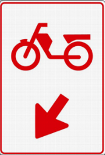
Op elke 100 meter van provinciale en rijkswegen staat een hectometerbord of hectometerpaal. Het bord geeft informatie over de locatie, wegnummer, rijbaanaanduiding en hectometeraanduiding. Soms staat er ook een maximumsnelheid of rijbaanaanduiding op.
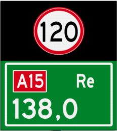
Route voor het doorgaand verkeer.
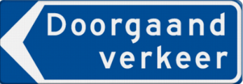
Bij wegwerkzaamheden wordt hiermee een tijdelijke omleiding aangekondigd. Volg de borden met een letter, zoals F. Het volgen van de omleiding is niet verplicht.
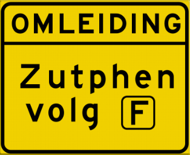
Volg de aangegeven richting voor de omleiding F.
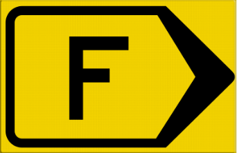
Volg de aangegeven richting voor de omleiding 1.
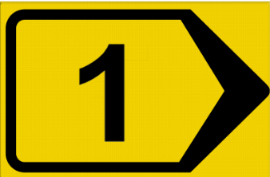
Volg de aangegeven richting voor de omleiding.
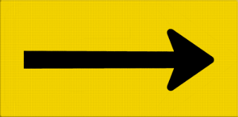
Volg de aangegeven richting, hierna stopt de omleiding.
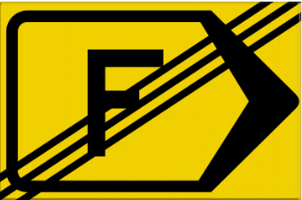
Je verlaat de autosnelweg.
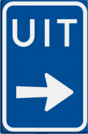
Het bord geeft aan dat de autosnelweg zich splitst in twee autosnelwegen. De wegen aan beide kanten van het bord zijn autosnelwegen.
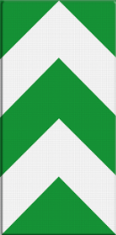
Het bord geeft een onderbreking, versmalling of het einde van de vluchtstrook aan.
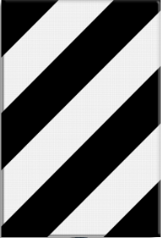
Dit bord geeft een uitwijkroute aan voor snelwegen waar verkeer na een ongeval kan vastlopen. Elke uitwijkroute heeft een eigen nummer en leidt via een omleiding terug naar de snelweg.
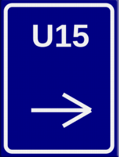